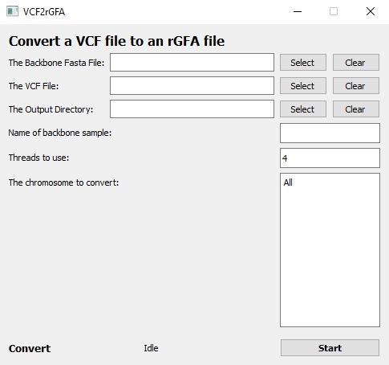
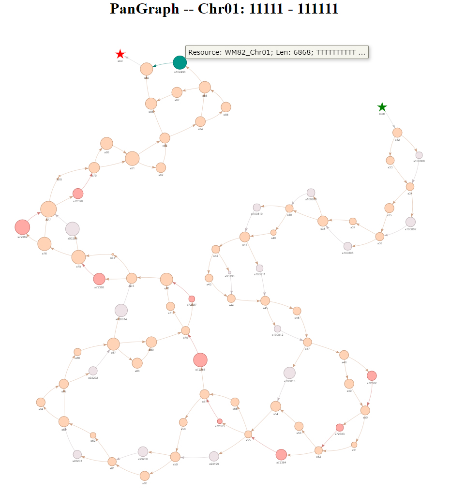
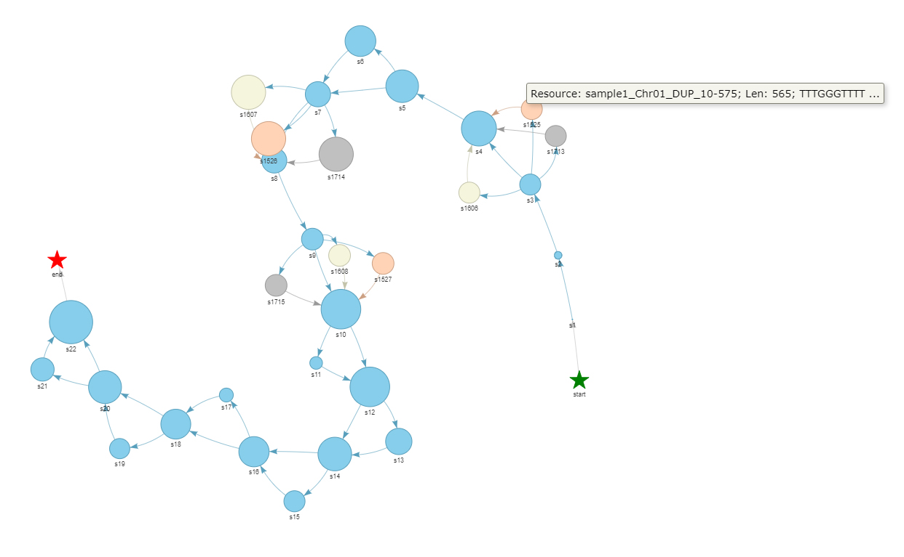

Manual for panGraphViewer
Yuxuan Yuan, Ricky Ma and Ting-Fung Chan*
the Chinese University of Hong Kong, Hong Kong

Version 1.0
2021-08-05
Table of Contents
Versions and dependences
Here we provide two application versions:
● Desktop-based application● Web browser-based application
Overall, Python3 is needed to run this software and we recommend using miniconda3 to install all python3 libraries.
x● On Windows system, you can download miniconda3 athttps://repo.anaconda.com/miniconda/Miniconda3-latest-Windows-x86_64.exe● On macOS system, you can download miniconda3 athttps://repo.anaconda.com/miniconda/Miniconda3-latest-MacOSX-x86_64.sh● On Linux system, you can download miniconda3 athttps://repo.anaconda.com/miniconda/Miniconda3-latest-Linux-x86_64.sh
After the installation of miniconda3, you can follow the steps below to run panGraphViewer.
Desktop-based panGraphViewer
Library installation for the desktop-based version
Steps on different systems
If you use
Windowssystem, you may need to find or searchAnaconda Prompt (miniconda3)first and then open it.If you use
macOSorLinuxsystem, you may openTerminalfirst and then type the command line belowxxxxxxxxxx$ export PATH=/full/path/to/miniconda3/bin:$PATH # modify the path based on your ENV
After the steps above, you can install the python3 libraries by typing:
xxxxxxxxxxconda config --add channels conda-forgeconda config --add channels biocondaconda install pyqt pyqtwebengine configparser pandas bokeh==2.2.3 dna_features_viewer natsort attrdict networkx
If you use pip, you can install the python3 libraries like:
xxxxxxxxxxpip install PyQt5 PyQtWebEngine configparser pandas bokeh==2.2.3 dna_features_viewer natsort attrdict networkx
or you can use pip to install like (need to go to the panGraphViewerApp directory first)
xxxxxxxxxxpip install -r requirement.txt ## On Linux or macOS systempip install -r requirement_windows.txt ## On Windows system
Note:
On
LinuxormacOSsystem,pysamis needed. You may install this package usingxxxxxxxxxx$ conda install pysamOn
Windowsplatforms, aspysamis not available, we use a windows-versionsamtoolspackage instead. Additional libraries below are needed and can be installed usingxxxxxxxxxx> conda install m2-base pyfaidx
Start the desktop-based version
On
LinuxormacOSsystem, you may use the command line below inTerminalto open the software.xxxxxxxxxx$ cd /full/path/to/panGraphViewer/panGraphViewerApp # modify the path based on your ENV$ python panGraphViewerApp.pyOn
Windowssystem, you may search and openAnaconda Prompt (miniconda3)first and then move to thepanGraphViewerdirectory. For example, if you have putpanGraphVieweron yourDesktopand the openedAnaconda Prompt (miniconda3)is in yourCdrive, you may use the command line below to start the program:xxxxxxxxxx> cd C:\Users\%USERNAME%\Desktop\panGraphViewer\panGraphViewerApp> python panGraphViewerApp.pyIf you have put
panGraphVieweron other drive, you may need to move to the target drive first. For instance, the target drive isD, you can move to the drive by typing D: inAnaconda Prompt (miniconda3)and then move to thepanGraphViewerdirectory to executepanGraphViewerApp.py.Please NOTE that on
Windowssystem, you need to use backslash\rather than the common slash/to move to the target directory.The logging information will show in
Anaconda Prompt (miniconda3)orTerminaldepending on the system you use (Will be good for you to monitor the status of the application).
Web-based panGraphViewer
To meet different requirments, we have also created a web-based panGraphViewer. Basically, most functions provided in the Desktop-based version have been implemented in the Web browser-based version. Users can install this version locally or directly deploy this online. The web browser-based verison offers administrative functions to help create accounts for different users.
Library installation for the web-based version
Depending on the systems used, users can use pip directly to install the needed python3 libraries after moving to the panGraphViewerWeb directory.
xxxxxxxxxxpip install -r requirement.txt ## On Linux or macOS systempip install -r requirement_windows.txt ## On Windows system
As mentioned in the desktop-based version, pysam cannot be installed on Windows systems, users need to install alternatives on Windows by using
xxxxxxxxxx> conda install m2-base pyfaidx
For Linux or macOS users, pysam can be installed directly using
xxxxxxxxxx$ conda install pysam
Start the web-based version
After the installation above, users can move to the panGraphViewerWeb directory by referring to the steps mentioned in the desktop version through Terminal or Anaconda Prompt (miniconda3).
Note that the folder needed here is panGraphViewerWeb.
Once moving to the panGraphViewerWeb directory, users can start the application by typing
xxxxxxxxxxpython manage.py runserver <IPaddress> ## on local machine the IPaddress can be: localhost:8004
or users can use the CMD below to start the Web browser-based version
xxxxxxxxxx$ bash run.sh ## On linux or macOS system.> run.bat ## On Windows system
Once the words Starting development server at http://localhost:8004/ or similar infomation is shown, user can open a browser to open the web-based panGraphViewer.
The admin page is http://localhost:8004/admin and the inital admin info is:
xxxxxxxxxxAccount: adminpassword: abcd1234
Note: please use the go back button provided by the web browser to move back rather than directly clicking the corresponding functions in the web page to perform analyses.
The Files needed in the application
The rGFA file
If you have multiple high-quality genome assemblies from different individuals, you may use minigraph (
Linuxpreferred) to generate a reference GFA (rGFA) file.Before the running, the header of the fasta file needs modifying. For example, if you have a fasta file from Sample1 with a header like:
xxxxxxxxxx>chr1AAAAAGCCGCGCGCGCTTGCGCYou may modify the header to:
xxxxxxxxxx>Sample1||chr1AAAAAGCCGCGCGCGCTTGCGCOn
Linux, the command lines that can be used to achieve this are:xxxxxxxxxx$ sample="" ## the name of the sample. For instance: Sample1$ fasta="" ## full path to the fasta file$ name=`echo $fasta | rev | cut -d"." -f2-| rev`$ sed -e "s/>/>${sample}||/g" $fasta > ${name}.headerModified.fastaWe also provide a python script
renameFastaHeader.pyto help this conversion. The script can be found in thescriptsfolder underpanGraphViewer-->panGraphViewerApp. Or users can use the UI to convert by clickingTools-->Format Conversion-->Modify FASTA Header.xxxxxxxxxxusage: renameFastaHeader.py [-h] [--version] [-f FASTA] [-n NAME] [-o OUTPUT]rename the header of a given fasta fileoptional arguments:-h, --help show this help message and exit--version show program's version number and exit-f FASTA a fasta format file-n NAME name of the sample-d DELIM delimiter. Default: '||'-o OUTPUT the output directoryPlease NOTE that:
I). If you do not modify the header of your fasta file and directly use
minigraphto generate therGFAfile,panGraphViewercan still read the file, while many features, such aswhere the node comes fromwould not show in detail. A warning message will display in both UI and the openedTerminalorpowershell.II). For the sample name, please
DO NOTinclude||.If you don't have an
rGFAfile, but aGFAfile, you may try to follow the standard here to convert yourGFAfile into anrGFAfile. After generating anrGFAfile, you can use this software to visualise the graph of interest.
The VCF file
We also accept a VCF file to show the graph. Basically, a reference FASTA file is optional if the VCF is a standard one. The program will automatically check the input VCF file and evaluate if the VCF file meets the requirement. If not, a message will show.
VCF filtration is highly recommended before plot the graph.
We also provide a method to help convert a VCF file to an rGFA file. Users can perform the conversion directly through the interface provided in the application or directly use vcf2rGFA.py under the panGraphViewer --> panGraphViewerApp --> scripts folder.
Note: If there are many variations in the VCF file, we recommend using vcf2rGFA.py directly to convert by chromosomes rather than converting entirely. This will save a lot of computing resource when plot graphs.
The usage of vcf2rGFA.py is shown below. Both Windows and Linux/macOS users can directly use this script to convert a VCF file to an rGFA file.
xxxxxxxxxxusage: vcf2rGFA.py [-h] [--version] [-f FASTA] [-b BACKBONE] [-v VCF] [-o OUTPUT] [-c [CHR [CHR ...]]] [-n NTHREAD]Convert a vcf file to an rGFA fileoptional arguments:-h, --help show this help message and exit--version show program's version number and exit-f FASTA a fasta format file that from the backbone sample-b BACKBONE the name of the backbone sample-v VCF the vcf file-o OUTPUT the output directory-c [CHR [CHR ...]] the name of the chromosome(s) [default: all chroms]-n NTHREAD number of threads [default: 4]
The BED file
Basically, the BED file should contain the annoation information from the backbone sample. There should be at least 6 columns in the BED file.
| Column | Information |
|---|---|
| 1 | Chromosome ID |
| 2 | Gene start position |
| 3 | Gene end position |
| 4 | Gene ID |
| 5 | Score (or others; the program does not use the info in this column) |
| 6 | Orientation |
Users can load the BED file to check the overlaps between variations and genes. By default, genes overlapping with more than 2 nodes will be shown in the dropdown menu. A gene list will be saved in the output directory after parsing the BED file.
Q&A:
The minimum computing resource needed
The minimum computing resource needed for running the application
xxxxxxxxxxMemory: 1GbThreads: 2
Which application should I use
For the desktop-based application, it is optimized on Windows 10 and macOS Big Sur. Ubuntu 18.04.5 is also tested. For Linux operating system version below Ubuntu 18.04.5 or equivalent, such as Ubuntu 16.04, PyQtWebEngine may not work properly. For other versions of operating systems, the desktop-based application may still work, however, the layout of the application may differ.
For the web browser-based version, we suggest running in Linux or macOS environment. If users want to run on Windows systems, Windows 10 or above is recommended. Users can also use docker to run the web browser-based version. However, WSL is needed to run the docker version on Windows 10 or above.
The backbone sample
The backbone sample is the one used as the main sequence provider to produce the pangenome graph or the reference sample to produce the VCF file. In the pangenome graph, most of the nodes are from the backbone sample (shared by all) with some nodes (variations) from other samples.
The colors showed in the graph
Each sample uses one particular colour and the most frequent colour should be the one used for the backbone sample. The colours are randomly selected by the program from a desgined colour palletes.
The type of graphs
We provides two kinds of graph plots in the program to achieve a good performance and visualisation. By default, if the number of checked nodes <= 200, vis.js based graph will show. Otherwise, a cytoscape.js based graph will show. Users can change the settings in the desktop-based application.
The shapes showed in the graph
If you use a VCF file to show graphs, we use different nodes shapes to represent different kinds of variants. For instance, in the default settings for the vis.js based graph, dot represent SNP, triangle represents deletion, triangleDown reprsents insertion, database represents duplication, text shows inversion and star represent translocation. Users can change the corresponding settings to select preferred node shapes to represent different variations on the desktop-based application.
How to use the program
For the desktop-based version, once the application is open as shown below, users can use the following steps to explore the program.

For the web-based version, the login interface is like:

Basically, the program reads rGFA file, VCF file and BED file.
If an
rGFAfile is available, users can browse the system to import therGFAfile directly.If an
rGFAfile is not available but aVCFfile is available, users can import theVCFdirectly.Please NOTE that the
defaultsettings forThreadsis4. Users can change4to any integer>=1depending on the threads that the system can provide. The name ofbackboneand thebackboneFASTA is optional. If they are not given, the program will automatically check and assign a name (backboneby default).

After importing the file(s) and specifying an output directory, users can click
Startbutton. The progrom will run internally with 'Parsing... or Converting ...' showing in theStatusbar. Once this is completed, 'Finished in xxx s!' will show.Now users can select the name of the
backbonesample and the chromosome id that wants to check. By giving a coordinate (startandendpositions), a graph will be ready to show. Here the coordinate is optional. Ifstartandendpositions are missing, the graph of the selected whole chromosome will show. If any of thestartandendposition is missing, the program will handle this automatically.Users can change the shape of nodes and modify the display of graph by changing the corresponding
Settingson the top left panel of theGUI.In the
Sample(s) showingpanel, users can remove or add particularsampleswhich will be shown or hidden in the graph. Thebackbonesample cannot be removed.Once all settings are completed, users can click the
plotbutton to check the graph. Simiarly, therunningandcompletedinformation will show in theStatusbar under thePlot the Graphpanel. The graph will show in the canvas and the graph can be zoomed in and zoomed out. By moving the mouse, the information of each node can show.
If
Cytoscapegraph is shown, users can pressCTRLorcommandand hold theleft clickof themouseto select particular node regions andrightclick themouseto show or hide nodes.
Users can check the sequences of particlar nodes by selecting through the node combobox or directly input in the textbox. Please Note that each line can only input one node id.
When checking the overlap between genes and variation regions, users can import a
BEDfile in theCheck Overlap with Genespanel. After parsing theBEDfile, genes overlapping with at least2nodes will in the dropdown menu. Users can select gene of interest to check overlaps. In the canvas, a graph will show. Users can enable the zoom-in and zoom-out function by clicking theWheel Zoom(x-axis)button on the right top panel in the canvas.
Users can explore other settings to get a preferred graph. Screenshot function is also provided. On
Windowssystems, users can pressALT+Pto start screen clipping. By holding theleft clickbutton of themouseto select the regions anddouble left clickto save the image.
Different variations
If users use a VCF file to generate a graph genome, when moving the mouse to the graph node, the program will automatically show the variation types, such as SNP(single nucleotide polymorphism), INS (insertion), INV (inversion) and DUP (duplication). The corresponding nodes from the backbone sample will also be linked and shown.

Enjoy using panGraphViewer!